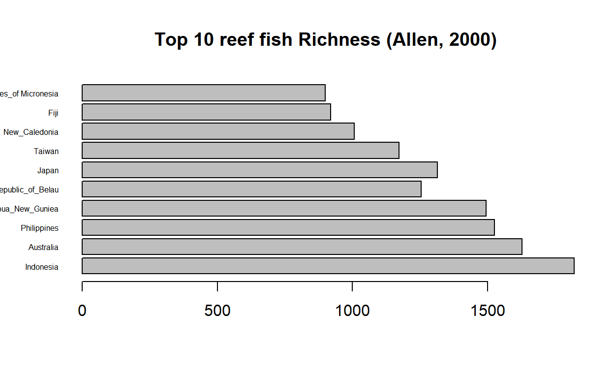

R is a popular free and open program for statistical computing (https://www.r-project.org/about.html). R is a widely-used program for statistical computing. R can be run from the command line or from a graphical user interface (GUI) that is automatically installed when you install R (if you open the R program installed on your computer, this is what will open up).
R consists of a core (minimal installation + add on packages (from the Comprehensive R Archive Network [CRAN], Bioconductor, or others). The core’s capabilities is expanded by using the add-on packages.
If you don’t have R installed on your computer:
.exe file that was just downloaded.DO NOT INSTALL R OR LATER SOFTWARES ON YOUR DESKTOP. ACCEPT DEFAULT AT LEAST YOU KNOW HOW TO CHANGE PATH FILES.
If you already have R already install:
To check the version of R you are using, start R: the version of R you are running is the first thing that appears on the terminal. Alternatively, Type sessionInfo() in the R console, which will display which version of R you are running. Go on the CRAN website and check whether a more recent version is available. If so, please download and install it. You can check here for more information on how to remove old versions from your system if you wish to do so.
If you don’t have R installed on your computer:
.pkg file for the latest R version.If you already have R already install:
To check the version of R you are using, start R: the version of R you are running is the first thing that appears on the terminal. Alternatively, Type sessionInfo() in the R console, which will display which version of R you are running. Go on the CRAN website and check whether a more recent version is available. If so, please download and install it.
Follow the instructions for your distribution from CRAN, they provide information to get the most recent version of R for common distributions.
Once it’s installed, open R to make sure it works and you don’t get any error messages.
NOTE: the entire course is prepared using R for windows version. Despite most of the code provided will work on any versions, slight differences may cause trouble when we will deal with animation and 3D visualizations.
If you already have R on your computer, an alternative is to run the following line of code in R native GUI (it will tell you if your R version is out-of-date ):
# R update (to run in R native GUI only)
if(!require(installr)) {
install.packages("installr"); require(installr)}
updateR()This will start the updating process of your R installation. It will check for newer versions, and if one is available, it will guide you through the decisions you need to make.
You may have to choose a CRAN mirror if it is your first download. A mirror is just a copy of the CRAN archives. Choose one in Taiwan, it is usually a bit faster to download and install.
To expand the abilities of R, you can first install a package with its name. The package ABC provides extra tools (functions) for Approximate Bayesian Computation (ABC)
abc. To do only once.# install the package `abc` with its name
install.packages("abc")# function are case sensitive
# all information after `#` is ignored
# it is call a comment. Commenting is very important Happily, only basic packages are loaded when you started R. Other are inactive and you need to activate them. Once installed on your computer, you need to say that you want to use a specific package.
abc.To do every time you wanna use the package.# use/load the package `abc` with its name
library("abc")
Practice 1.1 The vegan package provides tools for descriptive community ecology. It has most basic functions of diversity analysis, community ordination and dissimilarity analysis. Most of its multivariate tools can be used for other data types as well, not restricted to ecological purpose.Install and load the package vegan.
# Install & load `vegan` package
install.packages('vegan')
library('vegan')If you don’t know the name of a package relevant for you analyses:
use task views available at http://cran.r-project.org/web/views. It group packages to subject areas such environmetrics, multivariate, etc.
use online discussion, forum, and docs. Among many others sources, you will often be directed to discussion in stackoverflow
You don’t know: relax! You can access .html help via the ‘Help’ menu: Help/Search help. Alternatively, a faster solution is to call for help directly in the R console. You can get:
mean# simple help on the use of a function
medianfunction (x, na.rm = FALSE, ...)
UseMethod("median")
<bytecode: 0x7fa2df8b0d30>
<environment: namespace:stats>median which will send you to an .html webpage.# detailed help on the use of a function
?median # alternative 1
help(median) # alternative 2# using a keyword for search
??medianIt is a good practice to create a working directory (folder) where you will store all your file. In general, each project will have its own working directory including data set, script, plot, etc.
# get your current working directory
getwd()You wanna change for a specific folder. Set it up using:
# set your current working directory
setwd()R is a calculator:
R is case sensitive pi will work, whereasPi will not
The list function ls() will provide you with all the objects in the memory.
# my current list is empty
ls()character(0)# I create and list 3 objects
a<-'corals' # create an object 'a' containing 'corals'
b<-'are' # create an object 'b' containing 'are'
c<-'cool'# create an object 'c' containing 'cool'
ls() # list objects 'a', 'b', 'c'[1] "a" "b" "c"Note: two operators <- and = can be used to import data. While longer, I favor <- in the creation of object to avoid confusion with mathematical operator
You can clean rm (remove) the objects list in memory ls() using:
Tip: The use of CTRL+L cleans your screen when you want to make it clearer. However, it does not remove the objects in memory.
To be able to work with a dataset (and make calculation based on it), it has to be import as an object in the memory of R. Many formats can be used (.xls, .spss, SAS, etc.). To start with, we will use and .xlsx file, but quickly we will turn toward less ‘heavy’ format. Note the distinction between reading a file and importing a file.
My file reef_fish is an .xlsx file located in the file ‘Data’ of my working directory.
# 1. using the package `readxl`
# 2. reading my `reef_fish.xlsx` in my working directory
# 3. importing `reef_fish.xlsx` in a `fish` object
library(readxl) # load the package `readxl'
read_excel('Data/reef_fish.xlsx') # automatically print on my screen# A tibble: 10 × 2
country richness
<chr> <dbl>
1 Indonesia 1820
2 Australia 1627
3 Philippines 1525
4 Papua_New_Guniea 1494
5 Republic_of_Belau 1254
6 Japan 1315
7 Taiwan 1172
8 New_Caledonia 1007
9 Fiji 919
10 Federated_States_of Micronesia 900fish<-read_excel('Data/reef_fish.xlsx') # store my table in an object called `fish`
fish # print my object `fish` # A tibble: 10 × 2
country richness
<chr> <dbl>
1 Indonesia 1820
2 Australia 1627
3 Philippines 1525
4 Papua_New_Guniea 1494
5 Republic_of_Belau 1254
6 Japan 1315
7 Taiwan 1172
8 New_Caledonia 1007
9 Fiji 919
10 Federated_States_of Micronesia 900More commonly, we will use .txt file (lighter) and the function `read.table’. But often you will need to think at several important arguments about the file you wanna to import:
# importing a .txt file
fish<-read.table('Data/reef_fish.txt', header=T, sep='\t', dec='.') Check ?read.table for all arguments you can specify within this function
It is not a good practice, but instead or working within a working directory, you can also target directly your file (check your file properties) or an url.
# import file by path name
fish<-read.table ("D:/.../Topic 1/Data/reef_fish.txt",header = TRUE,sep="\t", dec=".")# long version
fish<-read.table("D:/.../Topic 1/Data/reef_fish.txt", TRUE, "\t",".")# short versionYou can also use `file.choose()’ to locate directly the file on computer
fish<-read.table(file.choose (), header = TRUE,sep="\t", dec=".")Note: every time we created the object fish it replaced the one previously created.
Practice 1.2 Download reef_fish.xlsx, save it in a working directory you dedicated for this course, and import it in R. Do the same after converting this reef_fish file into a .txt file.
# Too fast you need to try by yourself?
# Maybe a look at ?write.table may helpYou can start to feel it quickly becomes hard to manage the copy and paste + edit the function in the R GUI. It starts to be interesting to have an script editor to edit our code. It will help at saving and running efficiently our code in R. Many alternatives exist from opening a simple.txt file, opening an new script window directly in R, or using a dedicated script editor. The latest one is the most common alternative.
File -> Exit or simply type in the R console:
q()Saving the workspace image will allow you to save all objects created in the R memory into your working directory (.Rdata). It also saves all commands given during the session (.Rhistory). Quit without saving.
RStudio is a graphical integrated development environment (IDE) that makes using R much easier and more interactive. It is open source (i.e. free) and available at http://www.rstudio.com/. Have a look at this introductive [video]https://www.rstudio.com/products/rstudio/
Important note: RStudio is becoming Posit in October for better ‘embracing multi-lingual data science’. Explore it [here]https://posit.co/ and be ready for the change.
If you don’t have RStudio installed on your computer:
If you already have R already install:
RStudio combines (File>New File>R Script):
A Script editor window where you can edit and send you commands to the console
A Console is where you can type commands and see the output
A Workspace shows all the active objects. The history tab shows a list of commands used so far.
The Files tab shows all the files and folder in your default workspace. The Plots tab will show all your graphs. The Packages tab will list a series of packages or add-ons needed to run certain processes. For additional info see the Help tab.
Among the many advantages of RStudio, you will appreciate the user-adjustable interface (see Options>Appearance>Layout), the auto-synthax, the suggestion function {package} together a brief description of its use.
Again using our fish data set, we can write a script to import the data set as an object fish and create a very simple plot to visualize difference of reef fish richness by country.
# import data set and create an object in R studio + simple plot
fish<-read.table('Data/reef_fish.txt', header=T, sep='\t', dec='.')
barplot(fish$richness, main="Top 10 reef fish Richness (Allen, 2000)", horiz=TRUE, names.arg=fish$country, cex.names=0.5, las=1)
Note: using the options in R studio, you can easily export the resulting plot as and image, a pdf, or to copy it to your clipboard.
R markdown is text-based formatting that allows you to embed code and explanatory text in the same document.R markdown documents consist of a header, code chunks and text. R markdown files (.Rmd) can be rendered to other document formats (e.g. html, pdf, docx) to generate reports or web applications.Formatting analyses in R markdown keeps the entire research process in one document that can easily regenerate reports and output if the data are changed.For example, the course website is a set of R markdown files that have been rendered to html files and are hosted on an online repository: https://github.com/vianneydenis/OCEAN5098.git
Visit R markdown webpage for an overview of its capability. Download cheat sheet to get familiar with it. I also recommend you the R markdown bible: Xie et al. (2020), available here to become an expert with markdown.
BEGINNER In order to understand its multiple advantages, simply go to File>New File>R Markdown in RStudio. Give your document a title test. Select HTML Output. Knit the document create, and save it as test to visualize it.The options ⚙ should allow you to ‘Preview in Window’ or to ‘Preview in viewer Panel’. Try to modify and play with it with the information available in the cheat sheets you downloaded.
ADVANCED On the top of this Environment page, you can download a environment.Rmd. By knitting it in RStudio, you should be able to render this .Rmd as html page similar to the present webpage. In order for it to work you would have to: (1) install ALL the packages used in this .Rmd (knitr, xfun, abc, vegan, readxl, formatR, etc.) (2) make sure to have in your working directory a file called Data where you will have download reef_fish.xlsx and generate reef_fish.txt (tip: see practice 1.2).
EXPERT This repository available on GitHub is the working directory of the OCEAN5098.Rproj file and it contains all of the .Rmd, .html and data files used to review this course. While you can can individually download and render the .Rmd files. It is better to fork this repository to your GitHub account, then clone a copy of this forked repository (from your own Github account to your computer).
You will need a bit of time to get use to it, but the best way to work with R is a version control and using online repositories. You can first create an account on GitHub and create a first repository that you will later use connected with RStudio.
Download the git installer for Windows here. This will install bash, which is a command-line shell program for interacting with files and programs on your computer.
Run the installer that you just downloaded. Click “Next” as needed and when you get to the following options accept default.
That’s it! You should now have three new programs installed in a folder called Git under your Program Files.
Follow the instructions below or view this video tutorial.
Go to this list and download an installer for Git.
Run the installer you downloaded.
After installing Git, there will not be anything in your /Applications folder, because Git is a command line program.
Note: if you have OSX El Capitan you may experience some errors when running Git if you don’t have an updated XCODE.Here is a description of the issue on StackOverflow and the solution is to open a Terminal window and type xcode-select--install.
Update 2022/9/13 ‘Issue with pushing’: check this fix here that should help you to connect RStudio with GitHub using an SSH key.
You may already have Git installed. If not, you can try to install it via your distribution package manager. For Debian/Ubuntu run ‘sudo apt-get install git’ and for Fedora run ‘sudo yum install git’.
File > New Project select Version Control: Checkout a project from a version control repository and Git:Clone a project from a Git repository. Enter the URL of your repository (and its name), and where you want to copy it on your computer. Once you validate:
you will create a .RProject. Any change in your repository will appear in ‘Git’
changes needs to be ‘commit’ (prepared to git, local) and ‘push’ (uploaded) to GitHub in order to be synchronized
first ‘commit’ will fail and ask you to set up Git with email and username. Open Git CMD and process as indicated
first ‘push’ will be pending your GitHub login, password, token (see below)
any changes in your GitHub repo must be ‘pull’ prior working on your project in RStudio.
Lost on this part? see this excellent tutorial on How to Use Git/GitHub with R
⚠ Practice 1.3 Complete ADVANCED (see above). Push both the .Rmd and .html files into a public repository available from your Github account. You will send the address (URL) of this repository (such as https://github.com/vianneydenis/OCEAN5098.git) to [vianneydenis@g.ntu.edu.tw] before next Monday in order to check your work. Alternatively, if you could not ‘push’ you files, send them directly to me as attached files. The title of your email should be `Practice 1.3 (your name: your student no.). It will be challenging but once you succeed you will have master important functionalities of the R environment. Have fun ;)
Content derived from Fukami T. & Coyle J. (Standford University) derived itself from Data Carpentry and Software Carpentry materials (Copyright (c) Data Carpentry) under CC-3.0 Attribution License (see http://creativecommons.org/licenses/by/3.0/).
Text and figures are licensed under Creative Commons Attribution CC BY 4.0. The figures that have been reused from other sources don't fall under this license and can be recognized by a note in their caption: "Figure from ...".